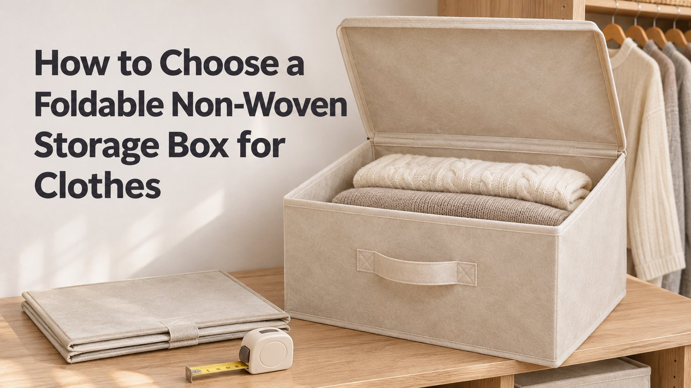
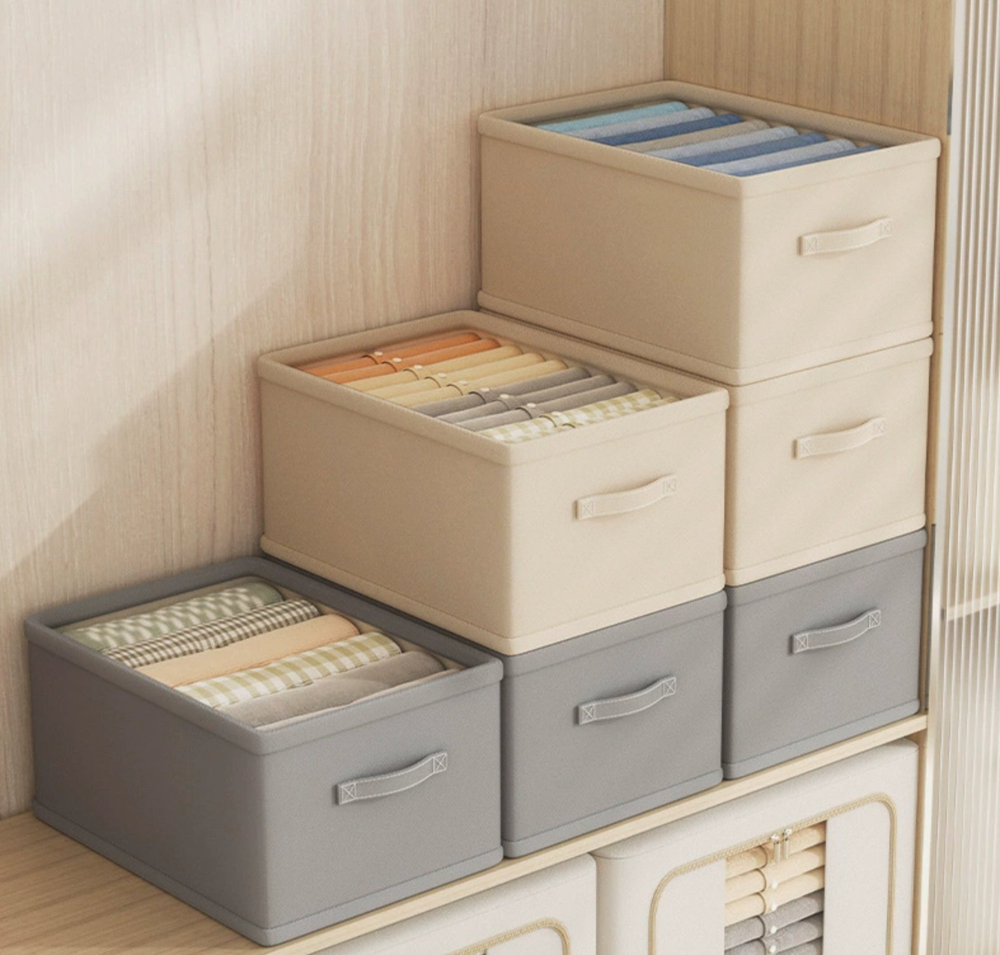
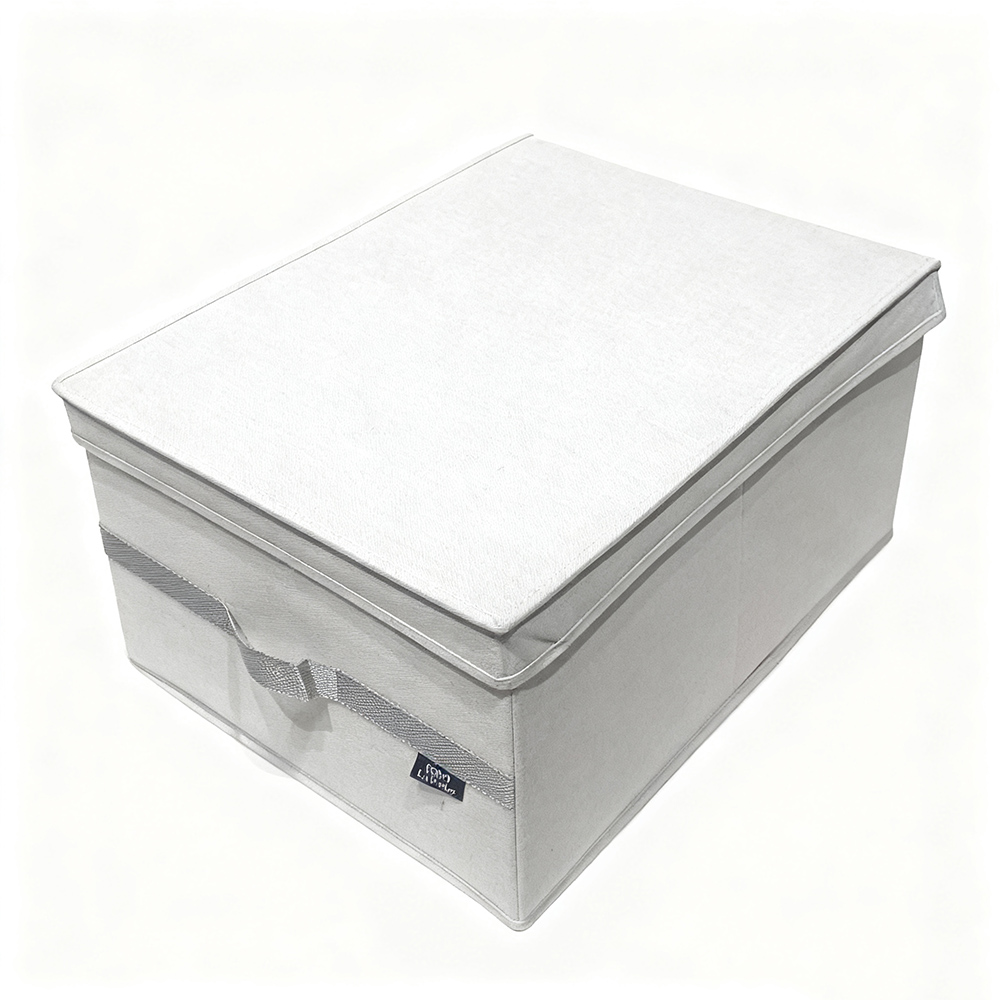

Foldable non-woven storage boxes look almost identical on a supplier's product page — same soft fabric, same handles, same folded-flat promise. In daily use, though, they behave very differently. The difference comes down to five specification details that most product photos don't show. This guide walks through each one, so retailers, e-commerce brands, and importers can pick boxes that hold folded clothes properly, stack without collapsing, and survive customer reviews.

1. Fabric Weight: Why gsm Matters More Than Fabric Type
Non-woven polypropylene is the standard material for foldable clothes storage boxes, but "non-woven" alone tells you nothing. The number that matters is the grams per square meter (gsm):
- Below 80 gsm. Thin, translucent fabric. It folds flat beautifully, but loaded with sweaters it bulges, and the box loses its rectangle within weeks. It survives only if the internal boards do all the work.
- 80–120 gsm. The practical sweet spot for clothes storage. Structured enough to hold shape, light enough to keep shipping costs down, and it takes printed colors and woven labels well.
- Linen-look or laminated fabric (120 gsm and up). The premium tier. Heavier fabric plus a linen texture reads high-end on shelf and camera, supports higher retail prices, and resists abrasion from daily pull-out use.
When comparing supplier quotes, always ask for the gsm in writing — two boxes can look identical in photos and differ by 40% in fabric weight, which is the single biggest hidden cost driver.
2. Internal Boards: The Skeleton That Decides Lifespan
A foldable box is a fabric shell around a skeleton. The skeleton — usually 2–3 mm cardboard or PP board — is where cheap products cut corners:
- Base board. Non-negotiable for clothes. It keeps the box square when full, lets it slide smoothly on shelves, and stops the "sagging basket" look that dominates negative reviews.
- Front panel board. A stiff front face keeps stacked boxes looking aligned — important for the wardrobe-shelf aesthetic that sells this category.
- Board coverage. Cheaper boxes board only the base; better ones line all four sides. More coverage means better structure but more folding resistance, so the fold design has to compensate.
- Moisture-resistant board. For clothes, ask whether the board is moisture-proofed. Ordinary cardboard absorbs dampness from garage or basement storage and transfers odor to garments.
3. Size: Match the Box to the Clothes, Not Just the Shelf
The right size depends on what goes inside and where it lives:
- All-round clothes box: ~40 x 30 x 25 cm. Holds 8–12 folded t-shirts or 4–6 sweaters without becoming a two-person lift. The most versatile SKU for retailers.
- Shelf and stackable wardrobe box: ~30 x 30 x 20 cm. Fits cube organizers and standard shelf bays; stack two-high without stress on the lower box.
- Under-bed seasonal box: 60 x 40 x 15–20 cm. For off-season clothes and bedding; low profile trades height for width, so base stiffness matters even more.
Measure the destination first — shelf bay, wardrobe cell, or under-bed gap — and keep 1–2 cm of clearance per side. For importers, note that EU and US furniture standards differ; a "universal" size rarely is.
4. Hardware: Handles, Zippers, and the Fold Mechanism
Small hardware decisions decide whether customers reorder or return:
- Webbing handles, cross-stitched. Handles are the #1 failure point. Cross-stitching (an X pattern) at both ends spreads load; single straight seams tear under a loaded box.
- Flip-open lids. A magnetic or fold-over flip lid beats a removable lid for daily use — one-handed access, and the lid never gets lost. Zipper-top boxes protect against dust best for long-term storage.
- Label window. A clear window or label slot on the front turns a generic box into an organizing system — a cheap feature that lifts perceived value significantly.
- Fold-flat memory. Test that the box pops back square after flat-folding. If it arrives wrinkled or needs "breaking in," customers assume it's defective.

5. Color and Branding: What Sells on Shelf
For clothes storage, neutral tones dominate: oat beige, warm grey, off-white. They blend into wood-furniture wardrobes, photograph consistently for e-commerce, and hide minor scuffs. Two-tone assortments — grey base with beige trim, or vice versa — read "designed" rather than "generic" and justify a higher price point.
Branding options on non-woven fabric are flexible for OEM orders: woven labels stitched to the front, screen printing on the side panel, branded zipper pulls, and custom hang tags. Because the fabric is dyed before cutting, colors can be matched to Pantone references — confirm on a pre-production sample, since lighting and fabric texture shift how a dye reads compared with paper chips.
The Importer's Pre-Order Checklist
- Fabric spec in writing. gsm, color (Pantone or swatch), and whether the fabric is odor-free.
- Board thickness and coverage. Base only, or all four sides? Moisture-proofed?
- Stitch density. Handles cross-stitched; ask for a loaded-weight test (e.g., 8–10 kg hold for 24 hours).
- Fold test on a finished sample. The box must return to square after flat-folding, straight from the retail packaging.
- Compliance. REACH or OEKO-TEX documentation where your market requires it — boxes touching clothing daily get scrutinized.
- MOQ and mixed orders. Standard minimums run from ~500 pieces per color; many factories accept mixed-color orders against one total quantity.
- Lead time. 20–35 days from sample approval to shipment for standard programs; custom colors add sampling days.
For a deeper look at the customization workflow, see our complete OEM storage box guide, and for material fundamentals read non-woven fabric storage boxes explained.
Frequently Asked Questions
What gsm non-woven fabric is best for clothes storage boxes?
80–120 gsm is the practical range: structured enough to hold folded clothes, light enough to ship economically. Below 80 gsm the shell sags once loaded; heavier linen-look fabric is the premium tier.
What size fits folded clothes best?
Around 40 x 30 x 25 cm for an all-round clothes box (8–12 folded garments), 30 x 30 x 20 cm for cube organizers, and 60 x 40 cm low-profile boxes for under-bed seasonal storage. Measure the destination and leave 1–2 cm clearance.
Do foldable boxes need an internal stiffening board?
Yes — a 2–3 mm base board (ideally plus a stiff front panel) is what keeps the box square when full and lets it slide on shelves. No-board boxes collapse when lifted and drive negative reviews.
What should importers check before ordering?
Five things: fabric gsm and color on a pre-production sample, board thickness and placement, cross-stitched handles with a load test, the fold-flat-and-pop-back test, and compliance paperwork (REACH/OEKO-TEX) where required. MOQs typically start at ~500 pieces per color.
Our Take
The best foldable non-woven storage box is boringly predictable: honest fabric weight, a proper base board, cross-stitched handles, and a fold mechanism that works straight out of the box. At SAVING Industry, we manufacture foldable clothes storage boxes in Jinhua with 80–120 gsm non-woven and linen-look fabrics, moisture-proofed boards, woven-label OEM branding, and sample-to-shipment in 20–35 days.
Need Foldable Storage Boxes for Your Range?
Send us your target size, fabric preference, and quantity — we'll quote your program, match colors to Pantone, and arrange pre-production samples in days.
Get a Free QuoteRelated Articles
How to Choose a Storage Box Manufacturer: 7 Questions to Ask
Vet factories on capability, compliance, and communication before placing your first order.
Read more →
Foldable vs Rigid Storage Boxes: Which Should You Import?
A side-by-side comparison to help you choose the right product mix.
Read more →
Small Storage, Big Impact: Why Divided Drawer Organizers Are a 2026 Bestseller
Compartment drawer organizers are one of 2026's fastest-moving SKUs — how to build a drawer program.
Read more →